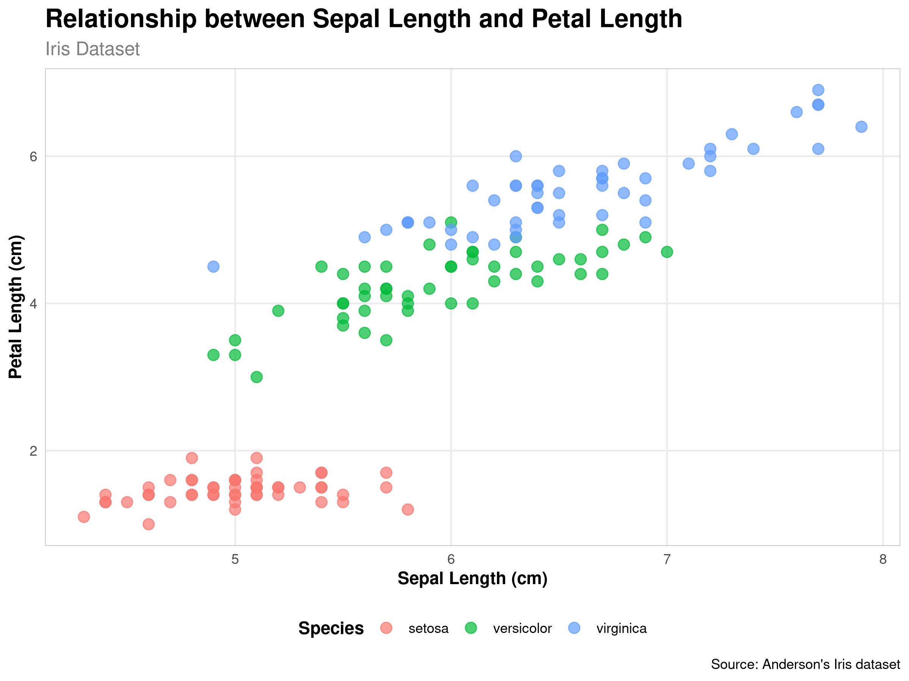
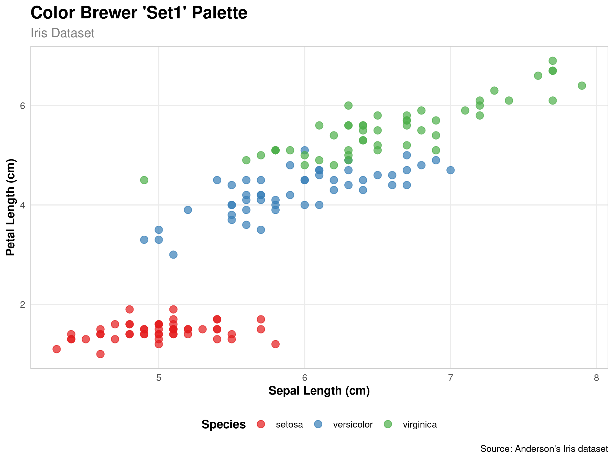
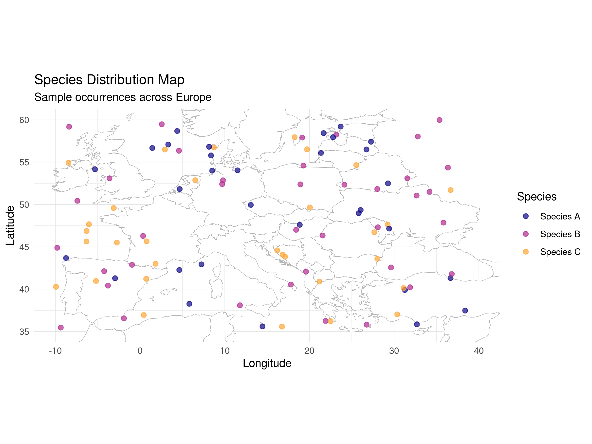

Building on the visualization techniques covered in Chapter 6, this chapter explores advanced data visualization methods that can help you communicate complex ecological data more effectively. We’ll focus on creating publication-quality graphics, interactive visualizations, and specialized plots for ecological data.
7.2 Creating Publication-Quality Graphics
7.2.1 Customizing ggplot2 Themes
The ggplot2 package allows extensive customization of plot appearance:
Code
library(ggplot2)library(dplyr)# Load datadata(iris)# Create a basic scatter plotbase_plot <-ggplot(iris, aes(x = Sepal.Length, y = Petal.Length, color = Species)) +geom_point(size =3, alpha =0.7) +labs(title ="Relationship between Sepal Length and Petal Length",subtitle ="Iris Dataset",x ="Sepal Length (cm)",y ="Petal Length (cm)",caption ="Source: Anderson's Iris dataset")# Display the base plotbase_plot
Code
# Create a customized themecustom_theme <-theme_minimal() +theme(plot.title =element_text(face ="bold", size =16),plot.subtitle =element_text(size =12, color ="gray50"),axis.title =element_text(face ="bold"),legend.title =element_text(face ="bold"),legend.position ="bottom",panel.grid.minor =element_blank(),panel.border =element_rect(color ="gray80", fill =NA) )# Apply the custom themebase_plot + custom_theme

7.2.2 Color Palettes for Ecological Data
Choosing appropriate color palettes is crucial for effective visualization:
Code
# Load packages for color paletteslibrary(RColorBrewer)library(viridis)# Display color palettes suitable for ecological datapar(mfrow =c(4, 1), mar =c(2, 6, 2, 1))display.brewer.pal(8, "YlGn")display.brewer.pal(8, "BrBG")display.brewer.pal(11, "RdYlBu")scales::show_col(viridis(8))
Code
# Apply different color palettes to our plotplot1 <- base_plot +scale_color_brewer(palette ="Set1") + custom_theme +ggtitle("Color Brewer 'Set1' Palette")plot2 <- base_plot +scale_color_viridis_d() + custom_theme +ggtitle("Viridis Discrete Palette")# Display the plotsplot1

Code
plot2
7.2.3 Arranging Multiple Plots
Combining multiple plots can help compare different aspects of your data:
Interactive plots allow users to explore data more deeply:
Code
library(plotly)library(knitr)# Create a ggplot visualizationp <-ggplot(iris, aes(x = Sepal.Length, y = Petal.Length, color = Species)) +geom_point(size =3, alpha =0.7) +labs(title ="Relationship between Sepal Length and Petal Length",x ="Sepal Length (cm)",y ="Petal Length (cm)") +theme_minimal() +scale_color_viridis_d()# Check if we're in HTML output modeif (knitr::is_html_output()) {# For HTML output, use the interactive plotly versionggplotly(p)} else {# For PDF output, use the static ggplot version p +annotate("text", x =6, y =6, label ="Note: Interactive version available in HTML output", fontface ="italic", size =3)}
Relationship between Sepal Length and Petal Length across different Iris species. In the HTML version, this plot is interactive and allows zooming, panning, and hovering for details.
7.3.2 Interactive Maps with leaflet
For spatial ecological data, interactive maps can be particularly useful:
Code
library(leaflet)library(ggplot2)library(knitr)# Create sample ecological site datasites <-data.frame(name =c("Forest Reserve", "Wetland Study Area", "Grassland Transect", "Mountain Research Station", "Coastal Monitoring Site"),lat =c(37.7749, 37.8, 37.75, 37.85, 37.7),lng =c(-122.4194, -122.45, -122.5, -122.4, -122.3),habitat =c("Forest", "Wetland", "Grassland", "Alpine", "Coastal"),species_count =c(120, 85, 65, 95, 110))# Create a color palette based on habitat typehabitat_colors <-c("darkgreen", "blue", "gold", "purple", "lightblue")names(habitat_colors) <-c("Forest", "Wetland", "Grassland", "Alpine", "Coastal")if (knitr::is_html_output()) {# For HTML output, create an interactive leaflet map habitat_pal <-colorFactor(palette = habitat_colors,domain = sites$habitat )# Create an interactive mapleaflet(sites) %>%addTiles() %>%# Add default OpenStreetMap tilesaddCircleMarkers(~lng, ~lat,color =~habitat_pal(habitat),radius =~sqrt(species_count) *1.5,popup =~paste("<b>", name, "</b><br>","Habitat: ", habitat, "<br>","Species Count: ", species_count),label =~name,fillOpacity =0.7 ) %>%addLegend(position ="bottomright",pal = habitat_pal,values =~habitat,title ="Habitat Type",opacity =0.7 )} else {# For PDF output, create a static ggplot map world <-map_data("world")ggplot() +geom_polygon(data = world, aes(x = long, y = lat, group = group), fill ="lightgray", color ="darkgray", size =0.2) +geom_point(data = sites, aes(x = lng, y = lat, color = habitat, size = species_count),alpha =0.7) +scale_color_manual(values = habitat_colors) +scale_size_continuous(range =c(3, 8), name ="Species Count") +coord_fixed(xlim =c(-123, -122), ylim =c(37.6, 37.9)) +labs(title ="Ecological Study Sites",subtitle ="Note: Interactive version available in HTML output",x ="Longitude", y ="Latitude", color ="Habitat Type") +theme_minimal() +theme(legend.position ="right")}
Ecological study sites across different habitat types. In the HTML version, this map is interactive and allows zooming, panning, and clicking on markers for details.
7.4 Specialized Ecological Visualizations
7.4.1 Ordination Plots
Ordination techniques like PCA and NMDS are common in ecological studies:
Spatial visualization is crucial for ecological data:
Code
library(ggplot2)library(maps)library(knitr)# Get world map dataworld <-map_data("world")# Create sample species occurrence dataset.seed(789)n_points <-100occurrences <-data.frame(species =sample(c("Species A", "Species B", "Species C"), n_points, replace =TRUE),longitude =runif(n_points, -10, 40),latitude =runif(n_points, 35, 60))# Create a mapggplot() +geom_polygon(data = world, aes(x = long, y = lat, group = group), fill ="white", color ="gray70", size =0.2) +geom_point(data = occurrences, aes(x = longitude, y = latitude, color = species),alpha =0.7, size =2) +coord_fixed(xlim =c(-10, 40), ylim =c(35, 60)) +scale_color_viridis_d(option ="plasma", end =0.8) +labs(title ="Species Distribution Map",subtitle ="Sample occurrences across Europe",x ="Longitude", y ="Latitude", color ="Species") +theme_minimal() +theme(panel.grid.major =element_line(color ="gray90", size =0.2))

Distribution of sample species occurrences across Europe. The map shows the spatial patterns of three different species.
7.5.2 Visualizing Raster Data
Environmental raster data is common in ecological studies:
Code
library(raster)library(ggplot2)library(viridis)library(maps)# Create a sample rasterr <-raster(ncol =100, nrow =100)extent(r) <-c(-10, 40, 35, 60) # Same extent as our mapvalues(r) <-runif(ncell(r)) *10# Random values# Convert to data frame for ggplotr_df <-as.data.frame(r, xy =TRUE)colnames(r_df) <-c("longitude", "latitude", "value")# Get world map dataworld <-map_data("world")# Create a raster mapggplot() +geom_raster(data = r_df, aes(x = longitude, y = latitude, fill = value)) +geom_polygon(data = world, aes(x = long, y = lat, group = group), fill =NA, color ="gray30", size =0.2) +scale_fill_viridis_c(option ="plasma", name ="Value") +coord_fixed(xlim =c(-10, 40), ylim =c(35, 60)) +labs(title ="Environmental Variable Distribution",subtitle ="Simulated environmental gradient across Europe",x ="Longitude", y ="Latitude") +theme_minimal() +theme(panel.grid =element_blank())
Environmental variable visualization across Europe. The raster data shows a simulated environmental gradient overlaid with country boundaries.
7.6 Summary
In this chapter, we’ve explored advanced visualization techniques in R that go beyond basic plots. These techniques allow researchers to create more informative, interactive, and publication-quality visualizations for ecological and forestry data.
Key points covered include:
Creating complex multi-panel visualizations
Developing interactive plots for exploration
Designing effective spatial visualizations
Implementing animation for temporal data
Customizing visualizations for publication
As you continue to develop your data visualization skills, remember that effective visualization is both an art and a science. The goal is not just to make visually appealing graphics, but to create visualizations that accurately and clearly communicate your findings to your audience.
7.7 Exercises
Create a faceted plot showing the relationship between two variables across different categories in one of the datasets.
Develop an interactive plot that allows users to explore relationships in ecological data.
Create a custom theme for ggplot2 that matches the style guidelines of a scientific journal in your field.
Design a spatial visualization showing the distribution of a species or environmental variable.
Create an animated plot showing changes in an ecological variable over time.
Source Code
---prefer-html: true---# Advanced Data Visualization## IntroductionBuilding on the visualization techniques covered in Chapter 6, this chapter explores advanced data visualization methods that can help you communicate complex ecological data more effectively. We'll focus on creating publication-quality graphics, interactive visualizations, and specialized plots for ecological data.## Creating Publication-Quality Graphics### Customizing ggplot2 ThemesThe ggplot2 package allows extensive customization of plot appearance:```{r}library(ggplot2)library(dplyr)# Load datadata(iris)# Create a basic scatter plotbase_plot <-ggplot(iris, aes(x = Sepal.Length, y = Petal.Length, color = Species)) +geom_point(size =3, alpha =0.7) +labs(title ="Relationship between Sepal Length and Petal Length",subtitle ="Iris Dataset",x ="Sepal Length (cm)",y ="Petal Length (cm)",caption ="Source: Anderson's Iris dataset")# Display the base plotbase_plot# Create a customized themecustom_theme <-theme_minimal() +theme(plot.title =element_text(face ="bold", size =16),plot.subtitle =element_text(size =12, color ="gray50"),axis.title =element_text(face ="bold"),legend.title =element_text(face ="bold"),legend.position ="bottom",panel.grid.minor =element_blank(),panel.border =element_rect(color ="gray80", fill =NA) )# Apply the custom themebase_plot + custom_theme```### Color Palettes for Ecological DataChoosing appropriate color palettes is crucial for effective visualization:```{r}# Load packages for color paletteslibrary(RColorBrewer)library(viridis)# Display color palettes suitable for ecological datapar(mfrow =c(4, 1), mar =c(2, 6, 2, 1))display.brewer.pal(8, "YlGn")display.brewer.pal(8, "BrBG")display.brewer.pal(11, "RdYlBu")scales::show_col(viridis(8))# Apply different color palettes to our plotplot1 <- base_plot +scale_color_brewer(palette ="Set1") + custom_theme +ggtitle("Color Brewer 'Set1' Palette")plot2 <- base_plot +scale_color_viridis_d() + custom_theme +ggtitle("Viridis Discrete Palette")# Display the plotsplot1plot2```### Arranging Multiple PlotsCombining multiple plots can help compare different aspects of your data:```{r}library(patchwork)# Create individual plotsp1 <-ggplot(iris, aes(x = Species, y = Sepal.Length, fill = Species)) +geom_boxplot() +labs(title ="Sepal Length by Species",x =NULL,y ="Sepal Length (cm)") +theme_minimal() +theme(legend.position ="none")p2 <-ggplot(iris, aes(x = Species, y = Petal.Length, fill = Species)) +geom_boxplot() +labs(title ="Petal Length by Species",x =NULL,y ="Petal Length (cm)") +theme_minimal() +theme(legend.position ="none")p3 <-ggplot(iris, aes(x = Sepal.Length, fill = Species)) +geom_density(alpha =0.7) +labs(title ="Sepal Length Distribution",x ="Sepal Length (cm)",y ="Density") +theme_minimal()p4 <-ggplot(iris, aes(x = Petal.Length, fill = Species)) +geom_density(alpha =0.7) +labs(title ="Petal Length Distribution",x ="Petal Length (cm)",y ="Density") +theme_minimal()# Arrange the plots(p1 + p2) / (p3 + p4) +plot_annotation(title ="Iris Morphology by Species",caption ="Source: Anderson's Iris dataset" )```## Interactive Visualizations### Creating Interactive Plots with plotlyInteractive plots allow users to explore data more deeply:```{r interactive-plotly, fig.width=8, fig.height=6, fig.cap="Relationship between Sepal Length and Petal Length across different Iris species. In the HTML version, this plot is interactive and allows zooming, panning, and hovering for details."}library(plotly)library(knitr)# Create a ggplot visualizationp <-ggplot(iris, aes(x = Sepal.Length, y = Petal.Length, color = Species)) +geom_point(size =3, alpha =0.7) +labs(title ="Relationship between Sepal Length and Petal Length",x ="Sepal Length (cm)",y ="Petal Length (cm)") +theme_minimal() +scale_color_viridis_d()# Check if we're in HTML output modeif (knitr::is_html_output()) {# For HTML output, use the interactive plotly versionggplotly(p)} else {# For PDF output, use the static ggplot version p +annotate("text", x =6, y =6, label ="Note: Interactive version available in HTML output", fontface ="italic", size =3)}```### Interactive Maps with leafletFor spatial ecological data, interactive maps can be particularly useful:```{r interactive-map, fig.width=8, fig.height=6, fig.cap="Ecological study sites across different habitat types. In the HTML version, this map is interactive and allows zooming, panning, and clicking on markers for details."}library(leaflet)library(ggplot2)library(knitr)# Create sample ecological site datasites <-data.frame(name =c("Forest Reserve", "Wetland Study Area", "Grassland Transect", "Mountain Research Station", "Coastal Monitoring Site"),lat =c(37.7749, 37.8, 37.75, 37.85, 37.7),lng =c(-122.4194, -122.45, -122.5, -122.4, -122.3),habitat =c("Forest", "Wetland", "Grassland", "Alpine", "Coastal"),species_count =c(120, 85, 65, 95, 110))# Create a color palette based on habitat typehabitat_colors <-c("darkgreen", "blue", "gold", "purple", "lightblue")names(habitat_colors) <-c("Forest", "Wetland", "Grassland", "Alpine", "Coastal")if (knitr::is_html_output()) {# For HTML output, create an interactive leaflet map habitat_pal <-colorFactor(palette = habitat_colors,domain = sites$habitat )# Create an interactive mapleaflet(sites) %>%addTiles() %>%# Add default OpenStreetMap tilesaddCircleMarkers(~lng, ~lat,color =~habitat_pal(habitat),radius =~sqrt(species_count) *1.5,popup =~paste("<b>", name, "</b><br>","Habitat: ", habitat, "<br>","Species Count: ", species_count),label =~name,fillOpacity =0.7 ) %>%addLegend(position ="bottomright",pal = habitat_pal,values =~habitat,title ="Habitat Type",opacity =0.7 )} else {# For PDF output, create a static ggplot map world <-map_data("world")ggplot() +geom_polygon(data = world, aes(x = long, y = lat, group = group), fill ="lightgray", color ="darkgray", size =0.2) +geom_point(data = sites, aes(x = lng, y = lat, color = habitat, size = species_count),alpha =0.7) +scale_color_manual(values = habitat_colors) +scale_size_continuous(range =c(3, 8), name ="Species Count") +coord_fixed(xlim =c(-123, -122), ylim =c(37.6, 37.9)) +labs(title ="Ecological Study Sites",subtitle ="Note: Interactive version available in HTML output",x ="Longitude", y ="Latitude", color ="Habitat Type") +theme_minimal() +theme(legend.position ="right")}```## Specialized Ecological Visualizations### Ordination PlotsOrdination techniques like PCA and NMDS are common in ecological studies:```{r}# Perform PCA on iris datasetpca_result <-prcomp(iris[, 1:4], scale. =TRUE)pca_data <-as.data.frame(pca_result$x)pca_data$Species <- iris$Species# Create a PCA biplotggplot(pca_data, aes(x = PC1, y = PC2, color = Species)) +geom_point(size =3, alpha =0.7) +stat_ellipse(level =0.95) +labs(title ="PCA of Iris Dataset",x =paste0("PC1 (", round(summary(pca_result)$importance[2, 1] *100, 1), "%)"),y =paste0("PC2 (", round(summary(pca_result)$importance[2, 2] *100, 1), "%)")) +theme_minimal()# Create a loadings plotloadings <-as.data.frame(pca_result$rotation)loadings$variable <-rownames(loadings)ggplot(loadings, aes(x = PC1, y = PC2)) +geom_segment(aes(x =0, y =0, xend = PC1 *5, yend = PC2 *5),arrow =arrow(length =unit(0.2, "cm")), color ="gray50") +geom_text(aes(label = variable), nudge_x =sign(loadings$PC1) *0.05,nudge_y =sign(loadings$PC2) *0.05) +labs(title ="PCA Loadings",x ="PC1",y ="PC2") +theme_minimal() +xlim(-0.7, 0.7) +ylim(-0.7, 0.7)```### Heatmaps for Community DataHeatmaps are useful for visualizing species-by-site matrices:```{r}# Create a simulated species-by-site matrixset.seed(123)n_sites <-10n_species <-15community_matrix <-matrix(rpois(n_sites * n_species, lambda =2), nrow = n_sites, ncol = n_species)rownames(community_matrix) <-paste0("Site", 1:n_sites)colnames(community_matrix) <-paste0("Sp", 1:n_species)# Convert to long format for ggplotcommunity_data <-as.data.frame(as.table(community_matrix))names(community_data) <-c("Site", "Species", "Abundance")# Create a heatmapggplot(community_data, aes(x = Species, y = Site, fill = Abundance)) +geom_tile() +scale_fill_viridis_c() +labs(title ="Species Abundance by Site",x ="Species",y ="Site",fill ="Abundance") +theme_minimal() +theme(axis.text.x =element_text(angle =45, hjust =1))```### Network Diagrams for Ecological InteractionsNetwork diagrams can visualize species interactions:```{r}library(igraph)library(ggraph)# Create a simulated interaction networkset.seed(456)n_species <-10interaction_matrix <-matrix(rbinom(n_species^2, 1, 0.2), nrow = n_species, ncol = n_species)diag(interaction_matrix) <-0# No self-interactionsspecies_names <-paste0("Species", 1:n_species)rownames(interaction_matrix) <- species_namescolnames(interaction_matrix) <- species_names# Convert to igraph objectg <-graph_from_adjacency_matrix(interaction_matrix, mode ="directed")V(g)$type <-sample(c("Plant", "Pollinator", "Herbivore"), n_species, replace =TRUE)# Create a network diagramggraph(g, layout ="fr") +geom_edge_link(arrow =arrow(length =unit(2, "mm")), end_cap =circle(2, "mm"),color ="gray50") +geom_node_point(aes(color = type), size =5) +geom_node_text(aes(label = name), repel =TRUE) +scale_color_brewer(palette ="Set1") +labs(title ="Ecological Interaction Network",color ="Species Type") +theme_void()```## Visualizing Spatial Data### Creating Maps with ggplot2Spatial visualization is crucial for ecological data:```{r spatial-map, fig.width=8, fig.height=6, fig.cap="Distribution of sample species occurrences across Europe. The map shows the spatial patterns of three different species."}library(ggplot2)library(maps)library(knitr)# Get world map dataworld <-map_data("world")# Create sample species occurrence dataset.seed(789)n_points <-100occurrences <-data.frame(species =sample(c("Species A", "Species B", "Species C"), n_points, replace =TRUE),longitude =runif(n_points, -10, 40),latitude =runif(n_points, 35, 60))# Create a mapggplot() +geom_polygon(data = world, aes(x = long, y = lat, group = group), fill ="white", color ="gray70", size =0.2) +geom_point(data = occurrences, aes(x = longitude, y = latitude, color = species),alpha =0.7, size =2) +coord_fixed(xlim =c(-10, 40), ylim =c(35, 60)) +scale_color_viridis_d(option ="plasma", end =0.8) +labs(title ="Species Distribution Map",subtitle ="Sample occurrences across Europe",x ="Longitude", y ="Latitude", color ="Species") +theme_minimal() +theme(panel.grid.major =element_line(color ="gray90", size =0.2))```### Visualizing Raster DataEnvironmental raster data is common in ecological studies:```{r raster-map, fig.width=8, fig.height=6, fig.cap="Environmental variable visualization across Europe. The raster data shows a simulated environmental gradient overlaid with country boundaries."}library(raster)library(ggplot2)library(viridis)library(maps)# Create a sample rasterr <-raster(ncol =100, nrow =100)extent(r) <-c(-10, 40, 35, 60) # Same extent as our mapvalues(r) <-runif(ncell(r)) *10# Random values# Convert to data frame for ggplotr_df <-as.data.frame(r, xy =TRUE)colnames(r_df) <-c("longitude", "latitude", "value")# Get world map dataworld <-map_data("world")# Create a raster mapggplot() +geom_raster(data = r_df, aes(x = longitude, y = latitude, fill = value)) +geom_polygon(data = world, aes(x = long, y = lat, group = group), fill =NA, color ="gray30", size =0.2) +scale_fill_viridis_c(option ="plasma", name ="Value") +coord_fixed(xlim =c(-10, 40), ylim =c(35, 60)) +labs(title ="Environmental Variable Distribution",subtitle ="Simulated environmental gradient across Europe",x ="Longitude", y ="Latitude") +theme_minimal() +theme(panel.grid =element_blank())```## SummaryIn this chapter, we've explored advanced visualization techniques in R that go beyond basic plots. These techniques allow researchers to create more informative, interactive, and publication-quality visualizations for ecological and forestry data.Key points covered include:- Creating complex multi-panel visualizations- Developing interactive plots for exploration- Designing effective spatial visualizations- Implementing animation for temporal data- Customizing visualizations for publicationAs you continue to develop your data visualization skills, remember that effective visualization is both an art and a science. The goal is not just to make visually appealing graphics, but to create visualizations that accurately and clearly communicate your findings to your audience.## Exercises1. Create a faceted plot showing the relationship between two variables across different categories in one of the datasets.2. Develop an interactive plot that allows users to explore relationships in ecological data.3. Create a custom theme for ggplot2 that matches the style guidelines of a scientific journal in your field.4. Design a spatial visualization showing the distribution of a species or environmental variable.5. Create an animated plot showing changes in an ecological variable over time.